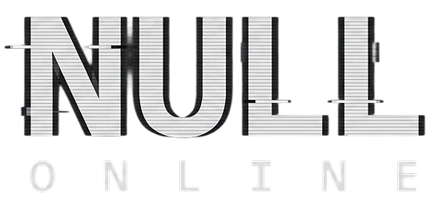

A minimalist MMO. One pixel. Infinite space.
Null Online is our take on what happens when you strip an MMO down to almost nothing. You're a single pixel in an infinite 3D void. You can move, you can see other players nearby, and you can chat. That's the entire game.
We built it as an experiment: what's the absolute minimum a shared online world can be and still feel real? No quests, no combat, no inventory, no progression, no map, no objectives. Just presence. A dot, a direction, and the knowledge that the other dots out there are real people. That turned out to be enough to make the space feel alive.
The design is intentionally restrictive. You can move in 3D space, see nearby players on a proximity radar, and talk to whoever's around. You cannot fight, trade, quest, or do anything else. We wanted to see what kind of interactions emerge when you take away every system except being there.
On the technical side, accounts are persistent, positions save between sessions, and everything syncs in real-time. The whole thing is about 2.7 MB. It runs as a Windows download or directly in the browser. The game is free.
There is one thing you can buy: a $3 Supporter Pack that turns your pixel and your name gold. That's it. No stat boosts, no extra features, no gameplay advantage — just a gold pixel. It's our commentary on the state of premium cosmetics in the industry, and also it looks nice.
We released Null Online on 5 February 2026. It's a finished game. It does exactly what it's supposed to do.